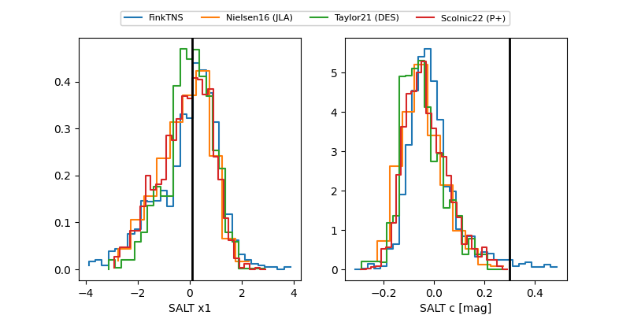

TNS: 2025uxo
YSE: 2025uxo
2025uxo (yse,tns)
PS25gun (panstarrs)
equatorial (ra, dec) = (248.8884,+41.01611)
galactic (l, b) = (64.9858,+42.41348)

last ps1::g=20.48, ps1::i=20.25, ps1::r=19.44, ps1::y=19.30
2 ps1::g, 1 ps1::i, 2 ps1::r, 1 ps1::y detections